Your monthly
discovery.
$65/ month
One curated bottle, two glasses of house or featured wine, 10% off bottles enjoyed here, early tasting access, and two personalized wine glasses when you join.
Ask about Classic ↗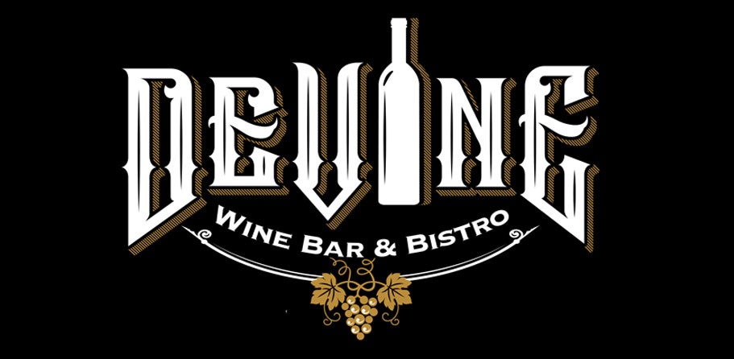
Come on over ↗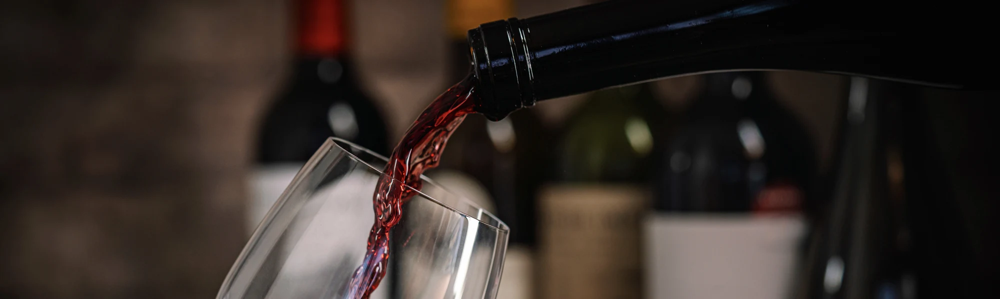
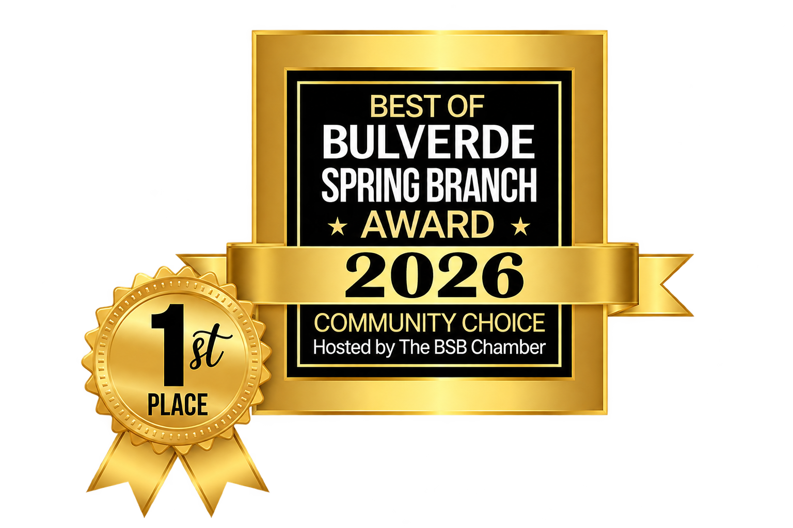
BEST WINE BARChosen by our community.SPRING BRANCH, TEXAS WINE BAR & BISTRO
Good food. Great wine.
Your kind of company.
A NEIGHBORHOOD FAVORITE.
A LITTLE ESCAPE.
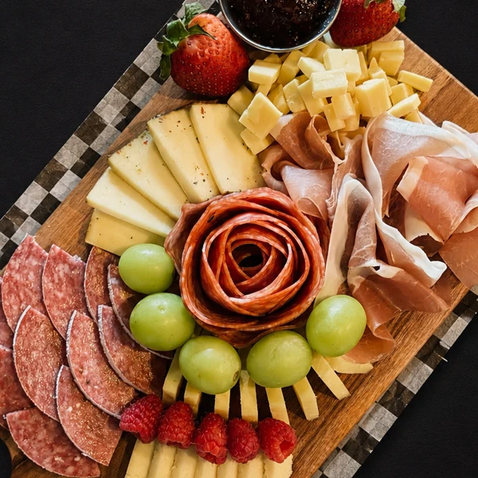
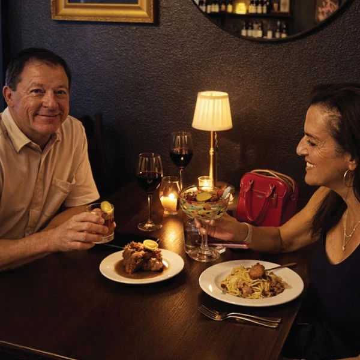
Thoughtfully prepared comfort food. A glass you’ll want to remember. Warm hospitality that makes you feel right at home.
Since 2021, Devine has brought neighbors and friends together in Spring Branch’s Faithville Park. Today, local owners Jarrett and Kendal carry that spirit forward, one table at a time.
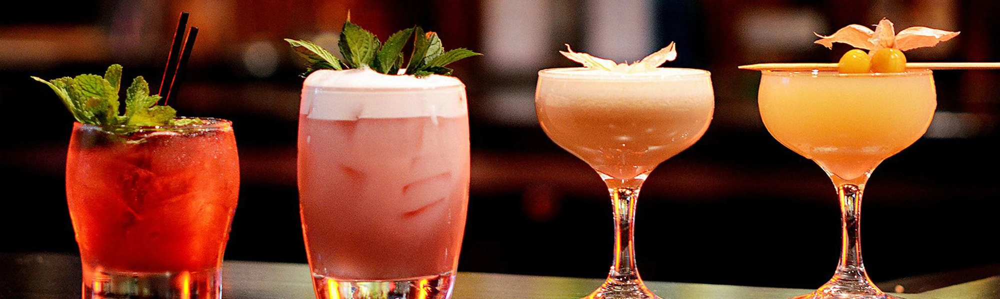
HANDCRAFTED COCKTAILS. VERY GOOD COMPANY.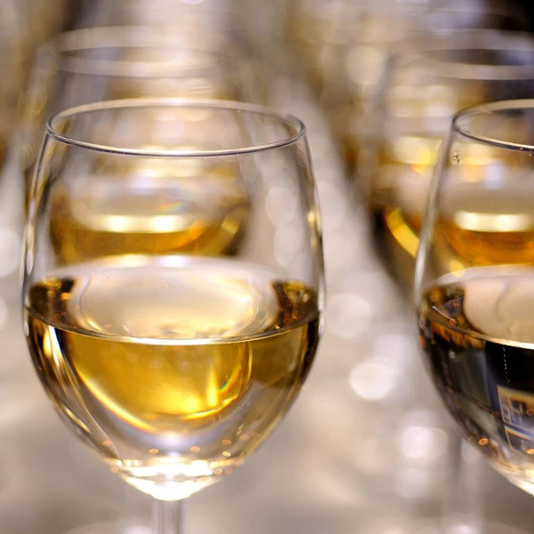
GLASS, FLIGHT OR BOTTLE.THE PLEASURE IS IN THE POUR
From a crisp first sip to a bold last pour, discover wines by the glass and bottles worth sharing. Let us help you find something you love.
Explore the wine list ↗Buy one bottle, get a second 50% off.
All day. A good excuse to gather.
Tue–Fri, 3–6 PM · Saturday, 4–7 PM
$10 martinis, Old Fashioneds & Devine Infusion Tinis. 20% off appetizers at the bar. Save $1 per glass of wine.
THE DEVINE SPEAKEASY LOUNGE
An intimate escape. A different rhythm.
Something worth discovering.
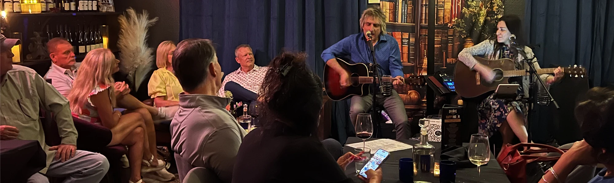
YOU’RE IN ON THE SECRET
THURSDAY–SATURDAY
6–10 PM
Just 25 guests.
Reservations highly recommended.
Behind an unmarked door and beneath the glow of amber light, the evening slows to a velvet hush. Devine Speakeasy Lounge is more than a place to gather — it’s an escape into another era, where decadent vintages and handcrafted cocktails linger on the palate, live music drifts through the air, and every corner feels wrapped in mystery.
Sink into the warmth of a dark, intimate setting filled with rich textures, candlelit tables, and the soft hum of conversation. Savor elevated cuisine, expertly mixed drinks, and soulful performances that turn an ordinary night into something unforgettable.
Whether hidden away for a quiet rendezvous or celebrating with friends, Devine Speakeasy Lounge invites you to indulge, unwind, and stay a little longer. Step inside. The night is waiting.
A LITTLE MYSTERY. EXCEPTIONAL TASTE.
OR SCROLL TO STEP INSIDEAN EVENING OF YOUR OWNCelebrating with a few favorite people? Ask about reserving the lounge for your private event.
“The presentation was very nice.”
“The service was great, our server was so attentive.”
“Everything we tried was excellent including the cocktails.”
Selected guest reviews, shared in their own words.
SAVE AN EVENING
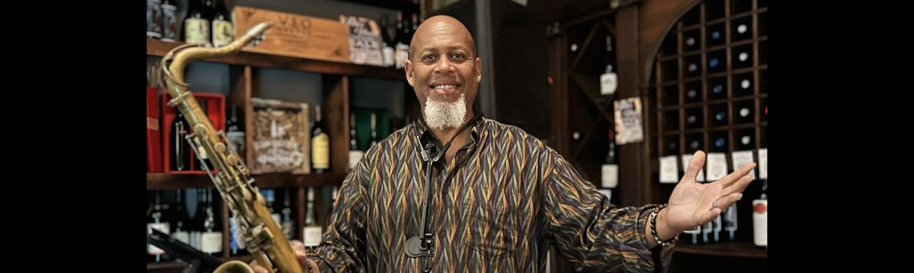
October 2026 highlights. Check the live calendar for current dates and availability.
THE DEVINE WINE CLUB
A monthly discovery. A familiar face.
A very good reason to return.
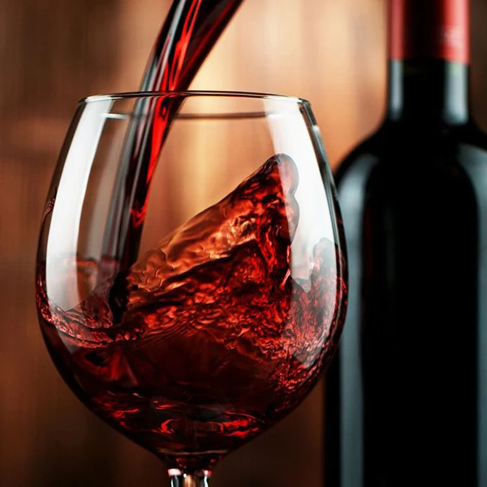
YOUR PEOPLE. OUR PLACE.
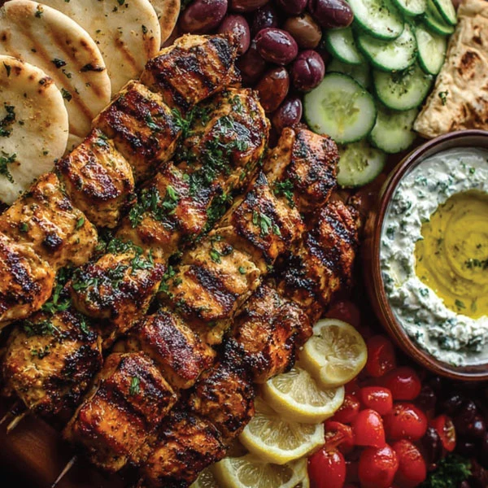
Big milestones. Little celebrations. A private party room, an inviting patio, and an intimate speakeasy. There’s a place for your kind of gathering.
Taking the celebration home? Ask about off-site catering and holiday meals to go.
Let’s plan something ↗Faithville Shopping Center
17130 Hwy 46 West, Suite 3–4
Spring Branch, TX 78070
Sunday brunch · 10 AM–3 PM
Lunch · served until 4 PM
Dinner · served after 4 PM
Speakeasy · Thu–Sat, 6–10 PM
Call for current opening hours and reservations.
Specials, live music, wine dinners.
A good reason to open your inbox.